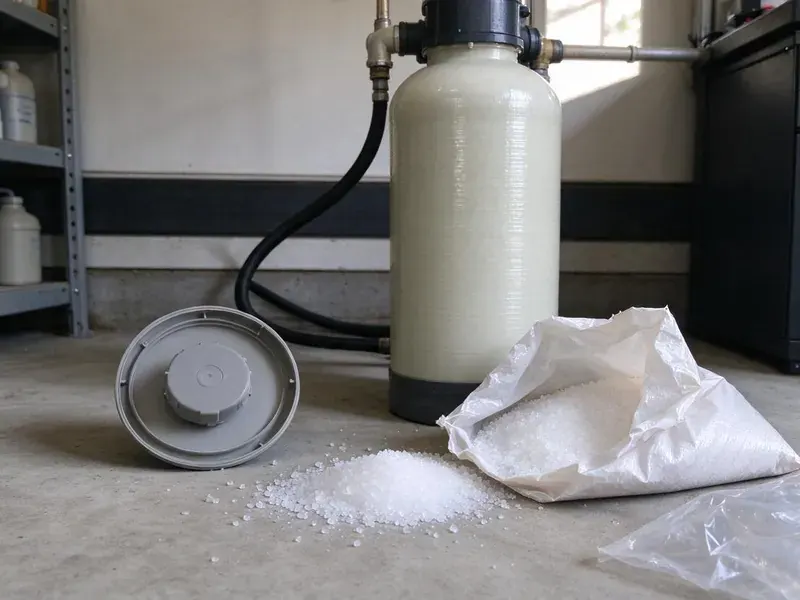

Flood Restoration in Sammamish, WA
Storm runoff or a burst pipe flooded your home? We pump out water, dry and sanitize flooded spaces in Sammamish, WA fast.
- Expert Water Extraction
- Insurance Claim Documentation
- Rapid Flood Water Removal
- Thorough Drying & Repair

Flooded After a Storm? Call Our Restoration Crew in Sammamish, WA.
Don't let water damage ruin your home. Contact FHN Plumbing immediately for professional help.
Flood Restoration in Sammamish, WA From Pump-Out to Rebuild
At FHN Plumbing, we understand the urgency of flood restoration for properties in Sammamish, WA. We use industrial-grade pumps and dehumidifiers to remove water fast and prevent further damage like mold growth and structural problems.
Our expertise includes:
- Fast water extraction and removal
- Repairs to plumbing and damaged structures
- Mold prevention and remediation protocols.

Additional Plumbing Maintenance Services in Sammamish, WA
Our maintenance and specialty plumbing services in Sammamish, WA protect your home year-round and extend the life of every system.


Customers
Why Choose FHN Plumbing for Flood Restoration in Sammamish, WA?
Flood water carries soil, bacteria and debris that soak into building materials. Prompt cleanup and sanitizing protect your health and reduce how much has to be replaced.
- Safe Sanitizing, Contaminated areas are cleaned and treated to reduce bacteria and odors.
- Rapid Response, Our emergency teams are dispatched immediately to address flood situations, reducing the overall impact of water damage.
- Advanced Equipment, We use high-capacity pumps, commercial-grade dehumidifiers, and thermal imaging cameras for thorough water removal and drying.
Citywide Coverage
We provide flood restoration in every neighborhood of Sammamish, including low-lying areas and streets that collect storm runoff. Our crews are ready to respond during stormy weather.
Experienced Team
The FHN Plumbing team is highly trained and experienced in modern flood restoration techniques. We prioritize continuous education so our methods are always up to date with the latest industry standards and technologies.
Safety-First Approach
Safety is paramount in all our flood restoration projects. We follow industry standards and local building codes for Sammamish, WA, and we make sure all electrical hazards are addressed and proper personal protective equipment is used during cleanup.
Trusted Certified Sammamish Plumbing Services Professionals
At FHN Plumbing, we take pride in providing certified plumbing services throughout Sammamish, WA. Backed by recognized industry credentials, our experienced plumbers combine technical skill with genuine customer care. Whether it is repair, installation, or maintenance, we follow strict safety and quality standards to deliver long-lasting results you can trust.
Call Us Now PHCC Plumbing Contractor Recognition
PHCC Plumbing Contractor Recognition Better Business Bureau (BBB) Accreditation
Better Business Bureau (BBB) Accreditation Angi Certified Pro
Angi Certified Pro ISO 9001 Quality Management Certification
ISO 9001 Quality Management CertificationProfessional Flood Restoration Services in Sammamish, WA
Water Heater and Plumbing Repair After Floods in Sammamish, WA
Gas water heaters, furnaces and electrical equipment that sat in flood water may be unsafe to use. We inspect and replace water heaters whose burners, controls or insulation were submerged. Floor drains and drain lines filled with silt are cleared. This step makes sure your plumbing is safe and working before you move back in.

Thermal Imaging and Moisture Detection in Sammamish, WA
Hidden moisture can cause ongoing damage and mold if not detected. We use thermal imaging cameras and moisture meters to pinpoint exact locations of water intrusion and saturation within walls, ceilings, and flooring. This non-invasive technology allows us to find hidden pockets of moisture that might otherwise be missed, for a complete and effective drying process in your Sammamish home.
Sanitization and Odor Removal in Sammamish
Floodwaters can carry contaminants and leave behind unpleasant odors. Our flood restoration process in Sammamish includes thorough sanitization of all affected areas using professional-grade disinfectants. We also use odor removal techniques and air scrubbers to eliminate lingering smells, so your home or business is clean, fresh, and safe.
Plumbing Repairs After Flooding in Sammamish, WA
Often, flooding is caused by a plumbing failure like a burst pipe, water heater leak, or sump pump malfunction. Our licensed plumbers can diagnose and repair the source of the water damage. We can replace damaged pipes, fixtures, and appliances, so your plumbing system is fully functional and up to code. We work with all major brands like Rheem, AO Smith, and Bradford White for water heaters and related equipment.
Commercial Flood Restoration in Sammamish, WA
FHN Plumbing provides specialized flood restoration services for commercial properties throughout Sammamish, WA. We understand the need to minimize business interruption, so our teams work efficiently to restore your commercial space. From large-scale water extraction to thorough drying and sanitization, we handle everything to get your business open again quickly.
Sewage Backup Cleanup in Sammamish
Sewage backups are not only destructive but also pose significant health risks. Our team is equipped with specialized gear and disinfectants to safely clean and sanitize areas affected by sewage. We follow strict protocols for biohazard cleanup and waste disposal, so your home is restored to a safe and hygienic condition. This service is essential for protecting your family from harmful bacteria and pathogens.
Flooded Basement Restoration in Sammamish
Housing in Washington ranges from early 1900s homes to new construction, with plumbing materials that change a lot from one decade to the next. Basements can collect water during storms and snowmelt. We pump out standing water, remove damaged materials and dry walls and floors. Sump pumps can be installed or repaired to handle future water. We also look at grading and drainage to reduce repeat flooding.

Foundation Leak Repair after Flooding in Sammamish
Homes, particularly those with slab foundations, can develop foundation issues from ground saturation after heavy rains or flooding. Glacial till and dense hardpan are common in western Washington, and they drain poorly enough to keep water against foundations and in crawlspaces. Our flood restoration experts in Sammamish can assess and repair foundation leaks caused by water damage. This often involves precision leak detection and specialized repair techniques to protect the structure of your home.
Flood Restoration Near Me in Sammamish, WA
We know which parts of Sammamish are prone to runoff and how local homes are built. That knowledge helps us dry structures thoroughly and spot hidden moisture. We can also return quickly for daily drying checks.
Our emergency teams are always ready to deploy across Sammamish, so help is just a phone call away. For any water emergency, trust FHN Plumbing to deliver fast, professional, and thorough flood restoration services right to your doorstep.
FHN Plumbing at a Glance
- Licensed and insured plumbers serving Sammamish, WA
- Same-day appointments and 24/7 emergency response
- Clear written estimates, no hidden fees
- 4.9-star rated by 382+ Washington customers
Sammamish Map
Sammamish Information
- Population
- 65,116
- Area codes
- 425/206/509
- Service area
- Sammamish and communities within 40 miles
- Nearby
- Bellevue, Redmond, Kirkland, Renton
Heavy rain and saturated soil can do lasting harm to foundations, so quick and thorough flood restoration is essential for homes in Sammamish, WA to prevent structural damage and mold issues.
Expert Services
Trust our professionals for reliable FHN Plumbing solutions in Sammamish, WA.
Our Specialized Plumbing Services in Sammamish, WA
At FHN Plumbing, we provide a complete range of plumbing services across Sammamish, WA. From leak detection to full system installations, our team ensures fast, precise, and affordable service for both residential and commercial properties. Explore our core services below:


How Our Flood Restoration Process Works in Sammamish, WA
Our flood restoration process in Sammamish, WA is designed for efficiency and thoroughness, so your property is restored safely and effectively.
Request a Quote
Contact FHN Plumbing immediately at (425) 491-3131 for emergency flood restoration services. We will dispatch a team to your location in Sammamish to assess the damage.
Damage Assessment
Our certified technicians will conduct a careful assessment of the flood damage, identifying the source and extent of water intrusion. This includes using moisture meters and thermal imaging.
Water Extraction
We deploy powerful pumps and vacuums to quickly remove standing water from your property. Rapid extraction prevents further saturation of building materials and contents.
Frequently Asked Questions About Flood Restoration in Sammamish
Smaller flood cleanups with extraction and drying often cost $2,500 to $6,000. Larger projects with contamination, mud removal and rebuild work can run $10,000 to $30,000 or more. We provide a detailed estimate and documentation for insurance.
Water heaters whose burners, controls or insulation were submerged are often unsafe and should be replaced. We inspect affected units and recommend repair or replacement. Gas appliances should never be relit until inspected.
Small amounts of clean water may be manageable, but contaminated flood water requires protective equipment and proper disinfection. Hidden moisture in walls and floors can cause mold if not dried thoroughly. Professional cleanup is safer and more effective.
Yes. Flood water often contains bacteria, sewage, chemicals and debris. Avoid contact without protective gear and keep children and pets out of the area.
Water removal and drying usually take three to seven days depending on the extent of flooding. Rebuild work can take additional days or weeks. We give you a timeline after the initial assessment.
FHN Plumbing offers 24/7 emergency flood restoration services and aims to respond to calls in Sammamish within 1 to 2 hours. Prompt action is critical to minimize water damage and prevent secondary issues like mold growth, so we prioritize rapid deployment of our teams.
We remove saturated porous materials, apply antimicrobial treatments and dry the structure with commercial equipment. Moisture readings confirm materials are dry before rebuild. Fast action is the best way to stop mold.
While you can handle very small, clean water spills, professional flood restoration is the better choice for serious water damage. Professionals have the specialized equipment, expertise, and certifications to properly extract water, thoroughly dry hidden areas, prevent mold, and make sure your property is safe and structurally sound. DIY efforts often miss hidden moisture, leading to lasting problems.
What People Are Saying About Our Plumbing Experts?

Emily R.
I called FHN Plumbing for plumbing repair, and the technician was fast, polite, and thorough. They explained the problem clearly and fixed it the same day. I will definitely hire them again. Highly recommended!
Plumbing Repair · Sammamish, WA
Sofia M.
Two new toilets installed in one visit, no mess left behind, and the tech even adjusted a faucet he noticed was dripping. Fair pricing and really friendly.
Toilet Installation · Bellevue, WALaura S.
I scheduled a water heater replacement, and the team made the process smooth and affordable. The new unit works perfectly, and they cleaned up after completing the job.
Water Heater Replacement · Sammamish, WA
Mark T.
When our office needed drain cleaning, FHN Plumbing provided quick, reliable service. The plumber arrived on time and made sure every drain flowed perfectly before leaving. Very satisfied.
Drain Cleaning · Renton, WA
Daniel K.
A pipe burst at 11 pm and they actually answered. The plumber showed up within the hour, shut everything down, and had us back to normal the next morning. Could not ask for more.
Emergency Plumbing · Redmond, WA
James P.
Our commercial plumbing system had a leak under the sink, and FHN Plumbing handled it professionally. The plumbers arrived quickly and restored everything without disruption to our customers.
Commercial Plumbing · Redmond, WA